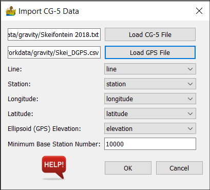
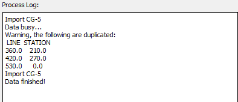
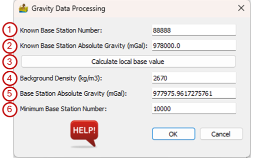
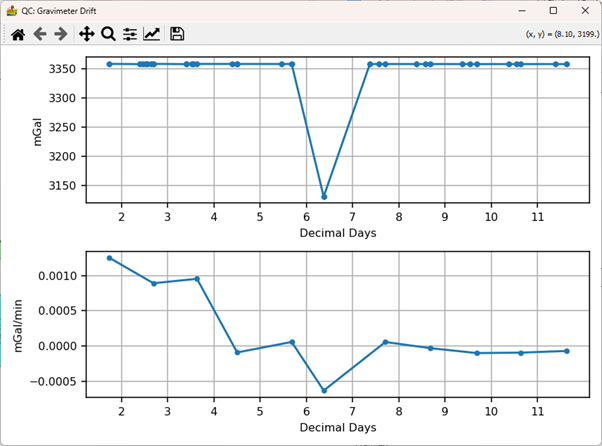
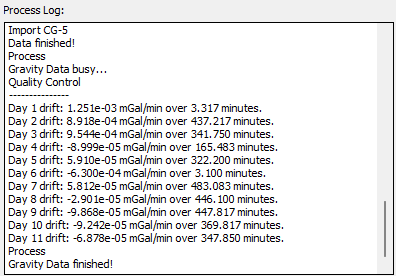

Gravity: Description of Modules¶
The functions in this menu allows the user to import and process gravity data collected with a Scintrex CG-5 Autograv gravimeter.
Import CG-5 Data¶
This module imports CG-5 gravimeter data from either a TXT or a XYZ file (as exported by the gravimeter). The user is also expected to input a comma delimited Global Positioning System (GPS) file with Station, Latitude, Longitude and Elevation columns.
The options on the interface are :
Load CG-5 File – Select the file that contains the recorded gravity data.
Load GPS file – Select the GPS CSV file.
Line – Select the column in the GPS file that contains the line number.
Station – Select the column in the GPS file that contains the station number.
Longitude – Select the column in the GPS file that contains the longitude.
Latitude – Select the column in the GPS file that contains the latitude.
Ellipsoid (GPS) Elevation – Select the column in the GPS file that contains the elevation. Elevation must be in metre.
Minimum Base Station Number – All station numbers larger than this are base stations.

Once the data have been imported, the Process Log window of the main PygMI interface will warn the user of any duplicate data points in the gravity dataset.

Process Gravity Data¶
This is a module used to process gravity data, assuming a single base station. It does so according to the North American gravity database standards, as described by Hinze et al (2005)
The input is a line dataset, imported via the Import CG-5 Data function. Coordinates must be in latitude and longitude, with elevation in meters.
The processing interface has the following parameters :
Known Base Station Number – This is the station number for a base station with a known absolute gravity value.
Known Base Station Absolute Gravity – This is the known absolute gravity in mGal for the station above.
Calculate local base value – Use this option to tie in the local base station to a nearby base station with known absolute gravity. Note that the local station number must be different from the known station number. There must also be at least one local base station between successive known base station values.
Background Density – This is the background density in kg/m3 .
Base Station Absolute Gravity – This is the absolute gravity value of the local base station used to correct for drift in the survey. It can be calculated by PyGMI or manually entered.
Minimum Base Station Number – All station numbers greater than this will be considered base stations.

Once the calculation has been completed a window showing the gravimeter drift will appear for quality control (QC) purposes. The Process Log window on the main PyGMI interface lists the calculated drift values.


The processed data can be viewed and exported using the context menus. It consists of the following fields (all in mGal):
gobs_drift – the observed drift,
gT – theoretical gravity value,
gATM – atmospheric effect,
gHC – height correction,
gSB – spherical Bouguer correction,
BOUGUER – Bouguer gravity anomaly.